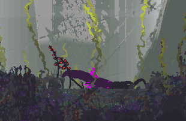

Роль AI Designer, методи реалізації та приклади з сучасних ігор
Про що цей сайт?
Даний вебсайт присвячений дослідженню штучного інтелекту
у неігрових персонажах (NPC) сучасних відеоігор.
Основна увага приділяється ролі AI Designer,
методам створення поведінки NPC та реальним прикладам з ігрової індустрії.
Основні розділи сайту
AI Designer — хто це та які завдання він виконує
Методи AI — інструменти створення поведінки NPC
Приклади — реалізація AI NPC у відомих іграх
Джерела — використані інформаційні матеріали
Основні поняття
NPC — NPC — неігровий персонаж, який керується програмою. Може бути як дружнім, так і ворожим до гравця. Частіше все ж таки ворожим. Тому що часто гравці повинні проходити випробування в іграх. І найрозповсюдженішим варіантом є перемога над NPC. Тому і створювати частіше за все дизайнеру треба саме NPC-ворогів під контролем штучного інтелекту.
Методи AI — інструменти створення поведінки NPC
Приклади — реалізація AI NPC у відомих іграх
Джерела — використані інформаційні матеріали
Чому тема AI NPC є важливою?
Якісний AI NPC безпосередньо впливає на занурення гравця у гру.
Розумна поведінка ворогів, союзників та мешканців ігрового світу
робить ігровий процес більш реалістичним, цікавим та непередбачуваним.

Штучний інтелект у сучасних відеоіграх
У сучасних відеоіграх штучний інтелект відповідає за поведінку
неігрових персонажів — ворогів, союзників та мешканців ігрового світу.
Завдяки роботі AI Designer персонажі вміють приймати рішення,
реагувати на дії гравця та створювати відчуття живого світу.